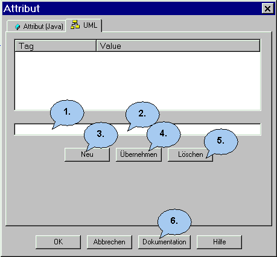
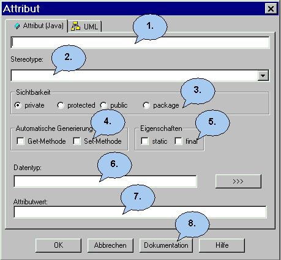

Der Attribut Dialog |
|
 1. Geben Sie hier den Namen des Tags an. 2. Geben Sie hier den zugehörigen Wert an. 3. Hier können Sie einen neuen Tag erzeugen. 4. Klicken Sie hier, um die Änderungen zu übernehmen. 5. Löschen Sie hier den Tag. 6. Hier kommen Sie in den Doku-Dialog.
1. Geben Sie hier den Namen des Attributs ein. Er darf keine Leerstelle und kein Sonderzeichen enthalten. 2. Falls es sich bei diesem Attribut um eine Property handelt, können Sie dies hier festlegen und nach Wunsch eine entsprechende get- und set-Methode bestimmen ( nur bei C# ). 3. Hier können Sie den Zugriff auf das Attribut setzen. Sie haben die Auswahl zwischen: private: Das Attribut ist nur innerhalb der Klasse
sichtbar und bekannt. 4. Wenn Sie hier einen Haken setzen, generiert Jumli Ihnen automatisch eine Get- bzw. eine Set-Methode in den Java-Code, mit denen Sie auf dieses Attribut Zugriff haben und es verändern können. 5. Hier können Sie die folgenden Eigenschaften des Attributs angeben: static: Das Attribut wird nicht für jedes Objekt
einzeln angelegt, sondern existiert nur einmal für die ganze
Klasse. Alle Objekte dieser Klasse haben Zugriff auf das
Attribut,d.h. wird es von einem verändert, erscheint es für
alle verändert. Der Zugriff ist auch möglich, wenn noch
kein Objekt dieser Klasse existiert. 6. Hier müssen Sie den Datentyp des Attributs hinterlegen. Dieser kann z.B int oder string sein. 7. Wollen Sie Ihr Attribut gleich zu Anfang initialisieren, können Sie es hier mit einem Wert versehen. 8. Hier kommen Sie in den Doku-Dialog.
|
Zurück zur Dialog Übersicht |
Zurück zur Startseite |